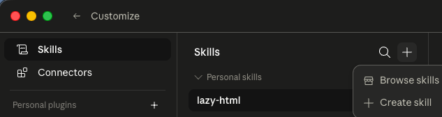

auto_awesome這是什麼?
lazy-html 是一個給 Claude 用的小工具(在 Claude 裡叫做「skill」)。裝好之後,你只要把想整理的東西交給 Claude —— 一段文字、一份清單、一個檔案,或只是一個主題 —— 它就會幫你做出一個漂亮、可以點來點去的網頁。
做好的網頁就是一個檔案,存下來用瀏覽器打開就能看,也可以傳給朋友,或放上網路分享。整個過程你都不用寫任何程式。
- edit_off 不用寫程式 用聊天的方式就能完成
- description 一個檔案 到處都能打開、好分享
- palette 漂亮又好用 中英文、深色模式都內建
conversion_path運作流程
裝好之後,用起來就三步,全程用聊天完成:
1
upload_file
丟給它資料
一段文字、一份清單、一個檔案,或一個主題
2
forum
回答幾個小問題
選你想要的版型和風格
3
web
拿到漂亮網頁
就是一個檔案,到處都能打開、好分享
rocket_launch如何使用?
只要設定一次,之後每次跟 Claude 聊天都能用。照著下面四步做就好:
- 下載 lazy-html(按上面的「下載」按鈕)。
- 打開 Claude,進到 Customize(自訂)→ Skills,點右上角的 +,選 Create skill。
- 把剛剛下載的 lazy-html 檔案匯入進去。
- 完成!之後在對話裡跟 Claude 說「用 lazy-html 整理這些資料」,再回答它問的幾個小問題(想要的版型、風格),就會幫你做好。
